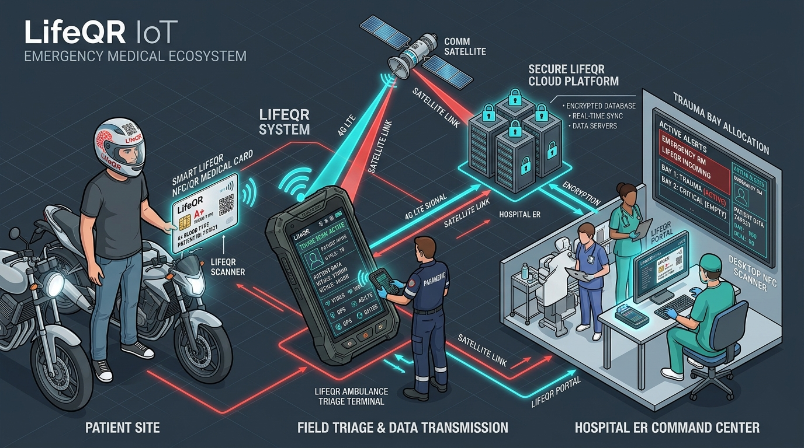
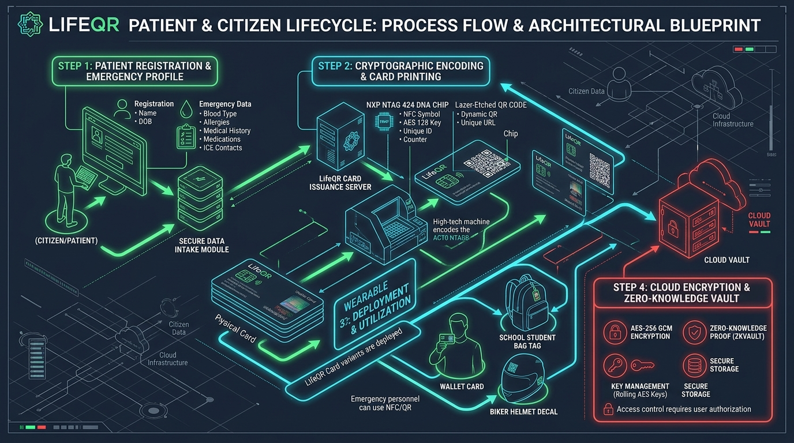
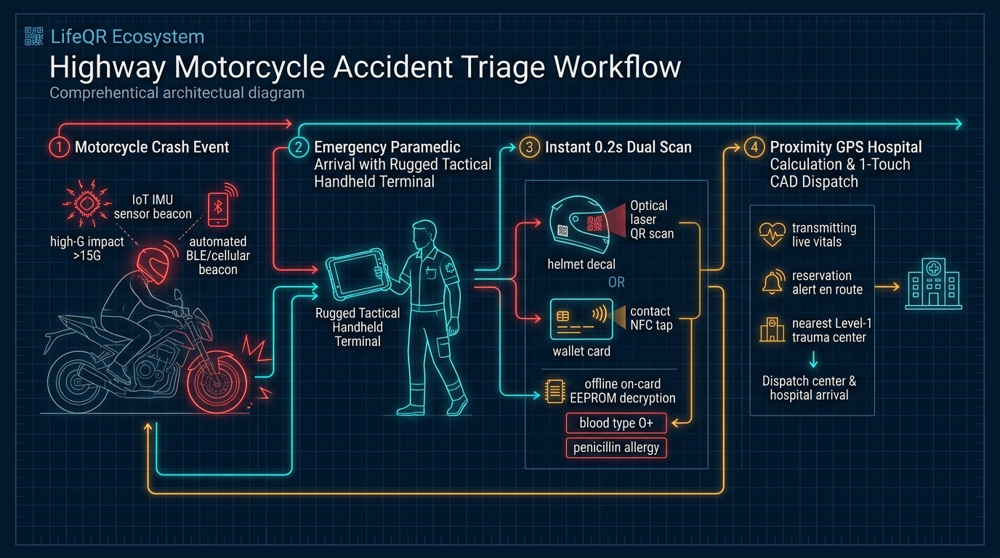
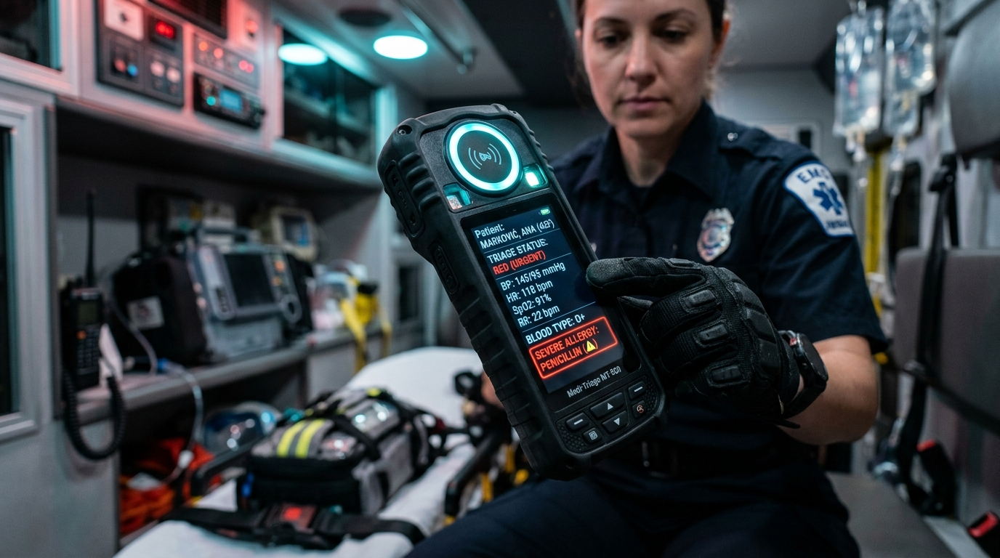
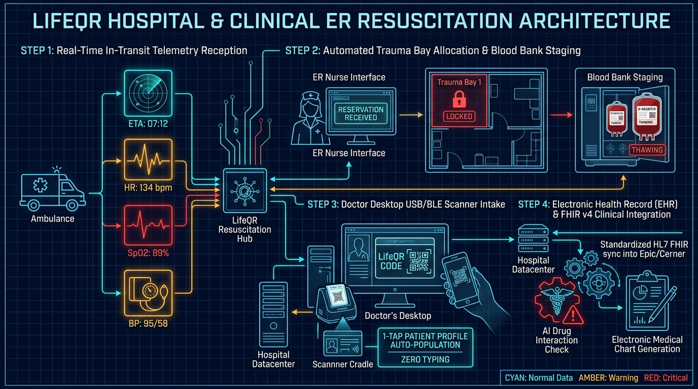
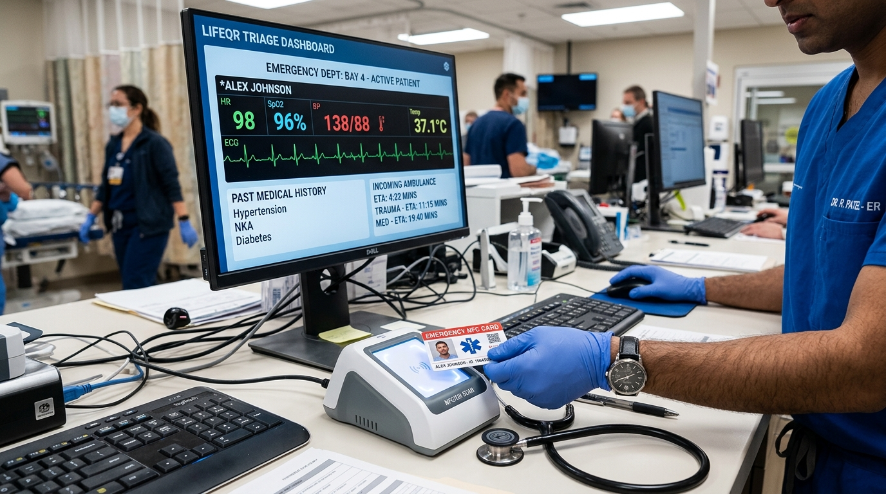
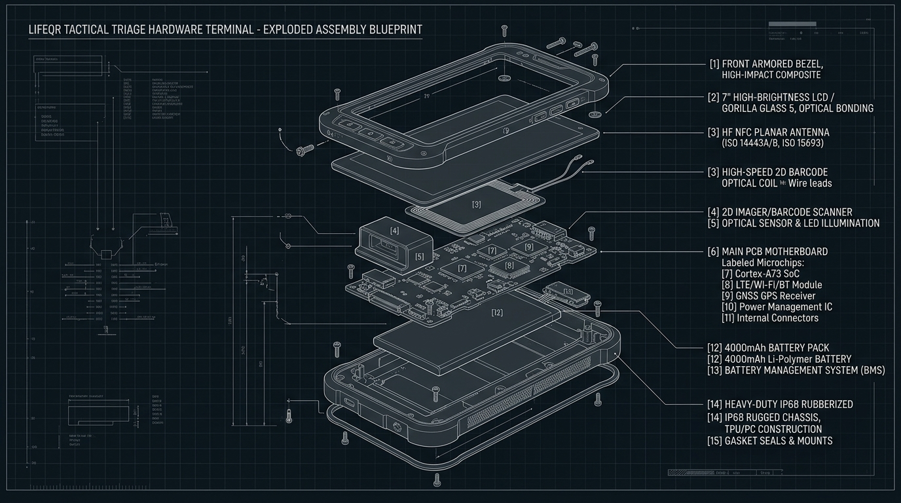

LifeQR Process Architecture Master
Patient Lifecycle • Bike Accident Triage • Clinical ER Resuscitation
Comprehensive step-by-step process architectures accompanied by dedicated engineering blueprints: From patient cryptographic card encoding and school student protection to autonomous motorcycle crash detection, paramedic dual-scanning, and automated trauma bay hospital allocation.
Full-Stack Connected Emergency Ecosystem

Figure 1: Complete 3-Pillar Data Loop — Patient Site, Ambulance Triage, and Hospital ER Hub
Process Tier 1: Patient Lifecycle
Digital intake, NTAG 424 DNA programming, laser QR printing, helmet decals, and school student tags.
Process Tier 2: Accident & Triage
Motorcycle crash event, IMU shock beacon, tactical terminal dual-scan, offline EEPROM decode, and GPS dispatch.
Process Tier 3: Hospital ER Command
In-transit telemetry radar, Trauma Bay 1 reservation, blood bank staging, doctor USB cradle, and FHIR EHR sync.
Patient & Citizen Lifecycle Blueprint

Figure 2: Architectural Blueprint — Patient Registration, Cryptographic Card Encoding & Wearables
Process 1 Breakdown
Step 1: Emergency Intake: Blood group, allergies, chronic ailments, and primary ICE contacts.
Step 2: NTAG 424 DNA Encoding: High-speed issuance machine writes rolling AES-128 SUN cryptographic keys.
Step 3: Multi-Wearables: Wallet card, helmet crash decal, and student backpack tag issued.
Step 4: Zero-Knowledge Vault: AES-256 GCM client-side encryption protecting medical privacy.
Technical Lifecycle: Registration to Card Issuance
1. Digital Onboarding
- • Verified Identity & Consent
- • Critical Vitals: Blood Group (A+, B+, O+, AB-), Severe Allergies (Penicillin, Sulfa)
- • Chronic Illness (Epilepsy, Diabetes)
- • Emergency Contacts (ICE 1 & 2)
2. NTAG 424 DNA Encoding
- • Programs NXP NTAG 424 DNA
- • Generates Master Keys (K0-K4)
- • Configures rolling AES-128 CMAC
- • Writes 512-byte encrypted offline EEPROM payload for 0% internet triage
3. Laser Etched QR
- • Micro-QR laser-etched onto PVC card
- • Level H error correction (withstands 30% physical abrasion or blood)
- • High-contrast Swiss Brutalist layout with unique alphanumeric ID
4. Zero-Knowledge Vault
- • Client-side AES-256 GCM encryption
- • Master keys stored in cloud HSM
- • Role-based dynamic masking
- • Immutable cryptographic audit log
School District & Pediatric Chronic Care System
admin_panel_settings Step 1: School District Safety Portal
School administrators and registered school nurses manage enrolled students with documented medical conditions (epilepsy, severe asthma, type-1 diabetes, peanut allergies) through a dedicated LifeQR Campus Safety Dashboard.
backpack Step 2: Bag Tag & Sports Wristbands
Every enrolled child receives a durable silicone sports wristband and clip-on backpack tag equipped with both NFC tap and laser-etched QR credentials for classroom, field trip, and gym activities.
emergency Step 3: Sudden Playground / Bus Incident
If a student collapses, experiences an epileptic seizure, or enters anaphylactic shock, teachers, coaches, or bus drivers tap the badge with any smartphone in 1.8 seconds.
notifications_active Step 4: Instant Protocol & Parent Dispatch
Screen displays immediate clinical instructions ("Administer EpiPen from left pouch; place on side; do not restrain") while simultaneously dispatching automated SMS calls to parents and the school nurse with GPS coordinates.
Highway Motorcycle Accident Triage Blueprint

Figure 3: Architectural Blueprint — Crash Event, Paramedic Dual-Scan, Offline Decrypt & Dispatch
Process 2 Breakdown
1. Motorcycle Crash: IoT IMU sensor beacon detects >15G impact and broadcasts automated BLE emergency beacon.
2. Paramedic Arrives: Equipped with rugged tactical handheld terminal; no consumer smartphone delays.
3. Instant 0.2s Dual-Scan: Reads helmet QR decal or wallet card; decrypts O+ blood and allergy offline.
4. GPS Proximity Dispatch: Auto-identifies Level-1 trauma hospital & streams live vitals en route.
Autonomous Motorcycle Crash & E-Call Sensor Flow
1. Impact (>15G)
Rider strikes vehicle or road barrier. 6-axis Bosch BMI270 sensor inside helmet beacon detects sudden deceleration spike (>15G) combined with high angular momentum.
2. 30s Stillness Check
Algorithm verifies post-crash victim stillness for 30 seconds to filter out benign drops (e.g. dropping helmet on a table), preventing false 911 calls.
3. BLE E-Call Broadcast
Beacon triggers high-power BLE 5.3 emergency advertisement containing rider's LifeQR ID and GPS coordinates to passing smartphones and municipal CAD.
4. Helmet Decal Scan
First responders scan the 3M retroreflective helmet decal from 1 meter away without removing the helmet, protecting against secondary cervical spine trauma.
Ambulance Tactical Terminal: Field Execution Flow

Figure 4: Paramedic Field Terminal Executing Dual Optical/RF Scan at Accident Site
Paramedic Workflow
Sub-Second Dual Sensor Scan: Taps card on top NFC halo or scans helmet QR decal. Sensor responds in < 200ms through heavy rain or blood splatter.
Offline EEPROM Vitals Decrypt: With 0% cell reception, terminal decrypts 512-byte payload stored on the card. Projects Blood Type O+ and Penicillin Allergy on screen.
1-Touch Vitals Entry & Stream: Paramedic inputs HR (134), SpO2 (89%), BP (95/58). Data streams continuously to hospital ER over 4G LTE / Satellite.
Sunlight-Readable Triage HUD: 800-nit high-contrast screen displays Red (Urgent) triage banner, preventing lethal contraindications.
Proximity GPS & Hospital Auto-Notification Architecture
1. GPS Spatial Query
Quectel GNSS module fixes exact crash coordinates and queries the regional trauma hospital registry within a 25 km radius.
2. Capability Matching
Evaluates live hospital telemetry: verified on-duty trauma surgeon, CT scanner availability, and O-negative blood reserves.
3. Auto Reservation
Transmits authenticated reservation token to City Trauma Care ER. Locks Trauma Bay 1 and thaws blood units 7 minutes prior to arrival.
4. In-Transit Radar
Ambulance streams continuous GPS coordinates, speed, traffic-adjusted ETA, and patient vitals to the receiving hospital command desk.
Hospital & Clinical ER Resuscitation Blueprint

Figure 5: Architectural Blueprint — Live In-Transit Telemetry, Trauma Bay Staging & Desktop Scanner
Process 3 Breakdown
1. In-Transit Vitals: ER monitor receives live countdown (ETA 07:12) and vitals (HR 134, SpO2 89%, BP 95/58).
2. Bay 1 & Blood Staged: Trauma Bay 1 locked; blood bank thaws matched O-negative units before siren arrives.
3. Doctor Desktop Cradle: Doctor taps card on USB/BLE scanner cradle; profile populates with zero manual typing.
4. FHIR & AI Safety: Auto-syncs into Epic/Cerner EHR; flags penicillin allergy and generates SOAP chart.
ER Advance Resuscitation & Blood Bank Protocol
notifications_active Advance Siren Alert (ETA -10m)
ER charge nurse receives siren alert and telemetry stream on central command console. Victim identified as 28yo male, motorcycle polytrauma, GCS 9.
lock Trauma Bay Lockout (ETA -7m)
Trauma Bay 1 is electronically reserved on the board. Nursing team pre-sets rapid infuser, ventilator circuit, and emergency chest tube tray.
water_drop Blood Bank Staging (ETA -5m)
Hospital blood refrigerator receives automated reservation: thaws 2 units of uncrossed O-negative PRBCs and 2 units of plasma. Ready at bay bedside.
vital_signs Immediate Handover (ETA 0m)
Ambulance backs into trauma dock; victim moved directly into Bay 1. Zero check-in registration delay. Resuscitation begins immediately.
Doctor Desktop Scanner & Zero-Typing Consultation Flow

Figure 6: Medical-Grade Desktop USB Cradle Auto-Populating Patient EHR Chart
Physician Desk Workflow
Driverless USB HID / CCID: Scanner cradle connects via USB Type-C to doctor's PC. Functions driverless as a smart card reader and keyboard wedge.
1-Tap Patient Record Ingestion: Doctor taps patient's card or scans QR code $\rightarrow$ complete clinical profile, past surgeries, and active prescriptions populate with zero manual typing.
AI Clinical Safety Copilot: Integrated AI cross-references newly prescribed medication against allergies and current drugs, instantly flagging lethal drug interactions.
Automated SOAP Note Generation: Generates compliant Subjective, Objective, Assessment, Plan (SOAP) clinical encounter documentation ready for physician signature.
HL7 & FHIR v4 Clinical Integration Pipeline
FHIR Patient
Maps legal name, MRN, date of birth, emergency contacts, and blood group according to US Core & international HL7 standards.
AllergyIntolerance
Directly transmits critical anaphylactic risks (penicillin, sulfa, latex, nuts) with verification status: 'confirmed' and criticality: 'high'.
Condition & History
Standardized SNOMED-CT and ICD-10 medical condition encoding (Type-1 Diabetes E10.9, Severe Asthma J45.9, Epilepsy G40.9).
Encounter Handover
Encapsulates paramedic field vitals (HR, SpO2, BP), Glasgow Coma Scale, and incident timestamp into an active emergency encounter record.
Zero-Trust Privacy & Multi-Tiered Access Governance
visibility Tier A: Public / Bystander
Scanning with a smartphone camera reveals only life-critical data: Blood Group, Emergency ICE Contacts (1-tap dial), and severe anaphylaxis warnings. Zero personal addresses or identity records exposed.
airport_shuttle Tier B: First Responder (EMS)
Paramedic authenticated terminal unlocks detailed clinical profile: active medications, chronic ailments, cardiac history, and specialized emergency physician directives.
stethoscope Tier C: Verified Hospital Physician
Doctor desktop terminal unlocks full clinical consultation notes, past diagnostic lab reports, AI differential insights, and prescription safety validator history.
gavel Cryptographic Audit Trail (HIPAA 164.312)
Every tap or scan is cryptographically signed, timestamped, and geotagged. Immutable audit logs are recorded on the secure ledger, ensuring complete accountability.
Tactical Triage Terminal: Component Architecture

Figure 7: Exploded Assembly Blueprint — Subsystems for IP68 Paramedic Field Terminal
Hardware Subsystems
Core SoC: ESP32-S3 Dual-Core Xtensa @ 240MHz with hardware crypto engine.
Dual Sensors: NXP PN532 NFC reader + 60fps 2D CMOS optical barcode imager.
Comms & GPS: Quectel EC200U 4G LTE-M with GNSS GPS/GLONASS positioning.
Battery System: 4000mAh Li-Po (18h continuous duty) + USB-C PD & Qi wireless dock.
LifeQR 2.0 Process Architecture Mastered
A Complete, Synchronized, Real-World Emergency Medical Network